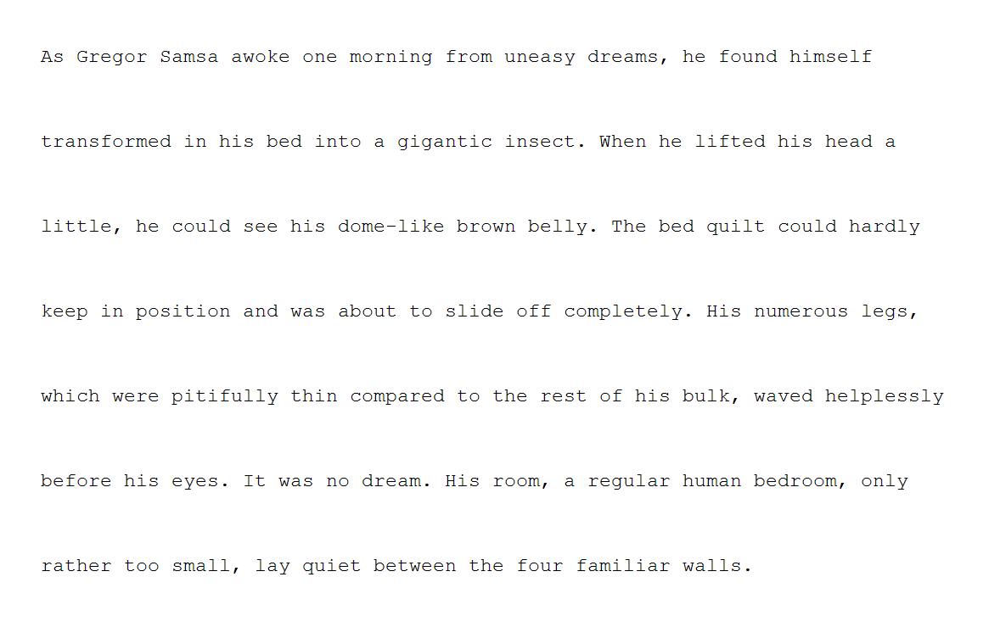
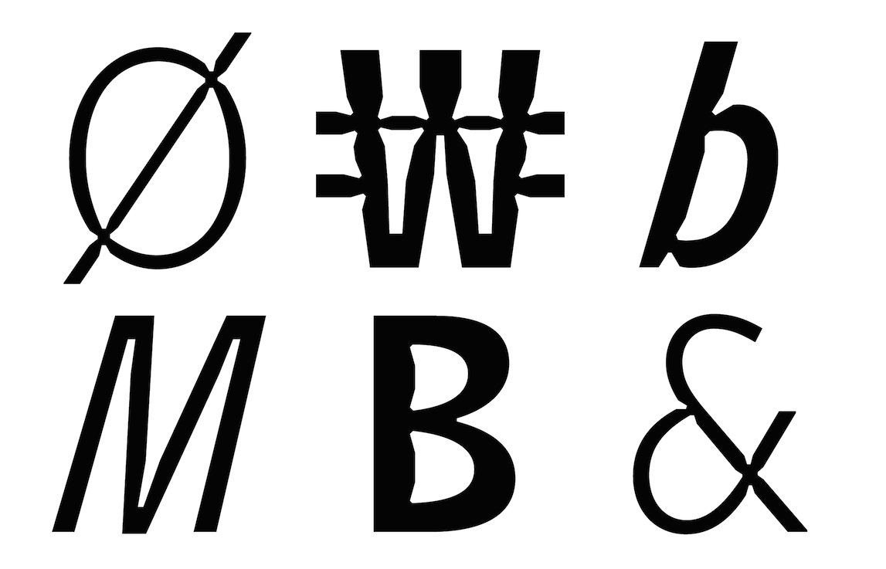
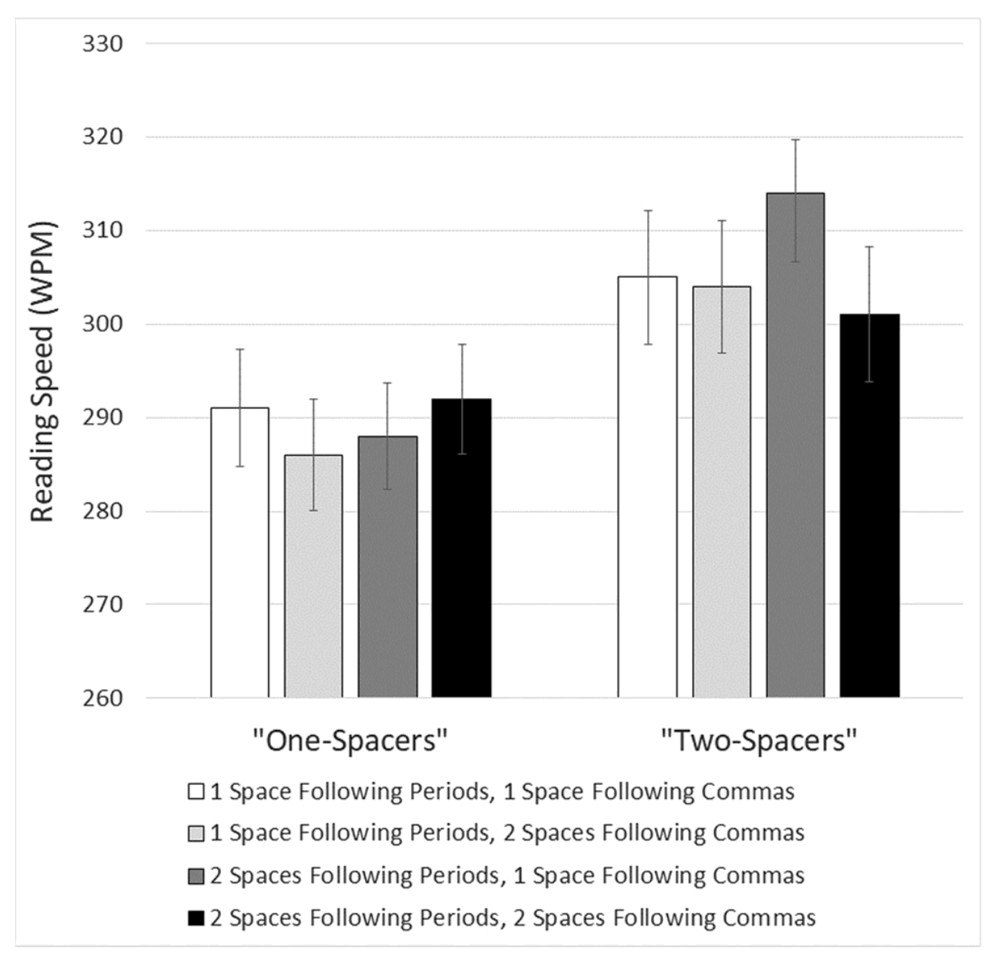

A response to new research
I’ve gotten several requests to address a new research study called Are two spaces better than one? The effect of spacing following periods and commas during reading, written by Rebecca Johnson, Becky Bui, and Lindsay Schmitt.
Apparently defying Betteridge’s Law, the study claims to show that two spaces after a period are easier to read than one. On its face, this also seems to contradict my longstanding advice to put only one space between sentences.
Because the study costs $39.95 for a PDF, I’m certain the social-media skeptics rushing to claim victory for two-spacing have neither bought it nor read it. But I did both.
True, the researchers found that putting two spaces after a period delivered a
Furthermore, the researchers only tested samples of a monospaced font on screen (roughly as shown below). They didn’t test proportional fonts, which they acknowledge are far more common. Nor did they test the effect of two-spacing on the printed page. The authors concede that any of these test-design choices could’ve affected their findings.

In sum—a small difference, limited to a certain category of test subjects, with numerous caveats attached. Not much to see here, I’m afraid.
Of course, I accept the study. Science is real! I have a few quibbles, noted below. But overall, it provides an example of why legibility research is often not as useful to practicing typographers as we might hope. Typography is broad and deep, and research studies can only test narrow propositions.
Most of all, though I will read any future studies on this topic that may emerge—budget permitting—I agree with the researchers’ closing thought:
An idealistic thought, but arguing passionately about dumb topics is the web’s raison d’être. Internet randos have been trying to rope me into arguments about two-spacing for 10 years. I indulged them at the outset. But not for a long time.
Why? Spoiler alert: I really don’t care how many spaces you put between sentences. One? Two? Seven? π/4? Knock yourself out.
Typography is not a science. Like language itself, it has some structural and practical conventions. If your goal is to persuade readers, it’s wise to be aware of these conventions, because relying on them can help you. Conversely, departing from these conventions may have unintended consequences.
But in the end, it’s up to you. I’ve never held myself out as the apex tastemaker nor the typography police. My project is to educate writers about these typographic conventions, because traditionally, these conventions aren’t taught alongside writing. (Though they should be—in the digital age, typographic skill seems just as essential as typing skill.)
To that end, wherever there’s room for discretion and choice, I say so. I want readers to develop their own typographic judgment, not merely recreate mine, cargo-cult style. I deploy my sternest tone only for those typographic conventions that are immovably entrenched. In other words: let’s not waste energy disputing the indisputable.
That’s why I start this book with one space between sentences. Not because it matters much visually. But rather because the rule is so well settled. It’s a litmus test for typographic skeptics: if you can’t accept that professional typographers always use one space between sentences, you’ll likely find the other rules a bore.
And some do. The cost of introducing thousands to the pleasures of good typography is enduring a few hecklers. I once gave a talk about typography to a group of UCLA law professors. Toward the end, one of them—known as the
I didn’t say that; only thought it. Obviously, it wasn’t a serious question. This professor thought typography was a silly topic, so he was dismissing it with the empiricist’s ultimate put-down: you’re not being empirical enough.
What I actually said to him went more like this—
Typography—like language and every other form of human expression—doesn’t occupy a realm of strict objective truth.
That doesn’t mean typographers are hostile to the idea of research, or that legibility can’t be tested. On the contrary, many typefaces have emerged from forms of empirical research, for instance—
Retina was designed (originally for the Wall Street Journal) to stay legible on low-quality newsprint. Type designer Tobias Frere-Jones studied how ink spreads on newsprint, and cut notches into the letterforms to compensate. Though these
“ink traps” look bizarre at large size, at small size they’re invisible. And instead of the letters looking blobby and gloppy, they just look correct.
The new font approved for federal highway use, Clearview, designed by Don Meeker and James Montalbano. As a font for signage, it had to be legible for drivers at various speeds and light levels, and was tested under these conditions.
Microsoft’s Sitka font, designed by Matthew Carter, likewise emerged from legibility studies about on-screen reading in Windows.
The examples above share an important feature. In each case, the type designer was asked to optimize legibility in a specific reading context. Therefore, it was possible to pose research questions narrow enough to be turned into testable propositions. (Not insignificantly, these projects also had a customer attached who could pay for testing.) In turn, these tests produced results that were sufficiently precise to become concrete design guidance. In sum, empirical research was useful specifically because the problem domain was narrow.
Let’s return to the law professor’s question: if we continued this process, could we discover the best font for everything? It looks hopeless. Research, by its nature, tests narrow questions. As I said in what is good typography, typography can’t be reduced to a math problem with one right answer. Likewise, it’s difficult to imagine a narrow research question about fonts whose results could be extrapolated to every possible context.
Still, even if empirical research can’t resolve that many typographic problems, we needn’t declare typography to be a domain of pure whimsy. We can always imagine typographic solutions to a problem that aren’t suitable. Indeed, thinking critically about the intended reading context is always helpful
In that way, typography functions much like written language itself. We can—and should—use pragmatic considerations to narrow down the space of possibilities. But when it’s time to choose from among those possibilities, there’s some art, humanity, and expressiveness to it. Just as no one can tell you the best opening sentence for your research paper, no one can tell you the best font for that paper, either.
Against that backdrop, if the main question we ask about a research study is what did it find?, the follow-up question ought to be what did it test?
First, let’s be clear about what this study didn’t test. Though the paper cites 48 sources—many psychologists, and a handful of the aforementioned internet critics—it pointedly does not cite to any typography authorities. Not me, not Erik Spiekermann, not Robert Bringhurst, not Ellen Lupton, not Bryan Garner, not the Chicago Manual of Style, not anyone.
But that seems right. Why? None of us are holding out this rule as an empirical claim. Nor are we inviting argument. We’re merely reporting that there is a longstanding convention grounded in professional practice: one space. We’re not offering a deeper justification for this rule, any more than a dictionary tries to justify why cough, tough, dough, and through don’t rhyme. I’m not even claiming the rule has always been thus (it hasn’t) or always will be (typographic practice changes, although slowly). But in the here & now, the practice—and therefore the rule—is clear.
Having yielded this ground, I do think the study authors err by opening with the flawed premise
The error of false equivalence also makes me wonder about the true motivations for this study. The authors seem interested in vindicating the American Psychological Association, a prominent contrarian that standardized on two spaces in its style manual some years ago. [Though no longer—see the 2022 update below.] As the paper explains, the APA originally justified its decision on the grounds of
Anyhow, back to the science. The study aimed to measure the difference in reading efficiency in paragraphs of text that differed in the number of spaces—two spaces or one—after periods and, interestingly, commas. The subjects were 60 Skidmore College students
After that, the subjects were asked to read a series of 20
So what did these
So here’s my best guess of how that text looked, using a paragraph of 89 words:
The paragraphs were not printed, but rather displayed on a
To get a truer flavor of the actual pixel display, here’s the same text from above, displayed by a Windows XP emulator:
At the outset, I said I accepted the study and its findings. Still, I can’t avoid pointing out that this style of typography is neither common nor realistic—not the monospaced font, not the point size, and not the line spacing. (Certainly, this sample paragraph doesn’t comport with the most basic advice about body text given here at Practical Typography.) Maybe those differences help isolate the issue of two spaces vs. one. Or maybe they confound it, by making the surrounding text more difficult to read. Consider that in an earlier reading study, lead researcher Rebecca Johnson used normally spaced Calibri.
Am I being unfair? I don’t think so. Researchers include these details so that others can assess the credibility of their methods, and therefore their findings. The two are inextricably tethered. But no typographer would defend the legibility of Windows text on a CRT display from 2002. It was awful then, and worse now. Today, even an entry-level smartphone screen is easier to read. And although no monospaced font is a miracle of legibility, Courier New is one of the worst—I described it as
There’s no evidence that the researchers consulted a typographer on the design of their study. I wish they had. Not because typographers know best. Rather, because that collaboration might’ve produced test cases that led to more fruitful results. As it stands, the researchers ended up testing the legibility of typewriter habits. Given that a computer can display any font, at any size, I would’ve preferred that they use a wider typographic variety. Given how easy it would’ve been to prepare printed samples, I would’ve preferred that they not rely strictly on an ancient CRT.
But as I said—I’m not the typography police. And I’m definitely not the typography-research police. Though I accept the findings of the study, the typographic conditions seem overly—and unnecessarily—artificial. Yes, science is real. But that cuts both ways. We commit to follow the evidence wherever it leads. But sometimes it doesn’t lead very far before the trail goes cold.
To be fair to the authors, they don’t oversell their findings. (Well, aside from the expectations set by their chosen title.) According to the study, there were
But that conclusion comes with some significant caveats:
The measured improvement was in reading speed, not reading comprehension, and was
“small in magnitude”—about 3%.“Comprehension accuracy was high across all conditions.” Meaning, reading comprehension was not better with two spaces vs. one.“The passages .... were relatively short and may not have been long enough or difficult enough to detect subtle differences” between one space and two.The authors acknowledge the problem I mention above: that
“the paragraphs ... were presented in a monospaced” font and that“word processors today utilize proportional fonts”.They also acknowledge my broader point about the naturalism of the samples, and that results
“may differ when presented in other font conditions (or other writing systems).”
But here’s the showstopper. Recall that the researchers separated subjects into two groups: one-spacers (i.e., those who ordinarily typed with one space) and two-spacers. The
For me, this difference between the reading performance of one-spacers and two-spacers was the most interesting part of the study. Here’s the chart showing how each group performed (one-spacers on the left, two-spacers on the right):

Notice four things about the chart—
Among the one-spacers, reading speed was basically the same regardless of punctuation spacing.
Among the two-spacers, the big improvement in reading speed came when reading text with the punctuation spacing that matched their own typing style—that is, two spaces after periods, and one space after commas.
No particular punctuation spacing improved or reduced reading speed for both groups.
And here’s the big one—two-spacers were faster readers than one-spacers regardless of punctuation spacing! This hoists a giant red flag that the outcome of this study was determined not by punctuation spacing, but other factors not directly tested.
No, I’m not prepared to theorize why two-spacers seem to be generally faster readers than one-spacers. I’ll leave that for the internet hordes to argue for the next few years. It’ll be a nice change of pace.
Meanwhile, my advice will remain the same: one space between sentences. Inasmuch as the study showed a benefit for only one subset of readers, I’ll declare Betteridge’s Law safe as well. Are two spaces better than one? No. I just saved you $39.95.
30 April 2018
As of the 7th edition of the APA Publication Manual, official APA style now calls for one space after a period. As to the question posed at the beginning—are two spaces better than one?—we now have the APA’s answer: no.
Even if you insist on extra space between sentences, typing two word spaces is an obsolete method. Today’s computers rely on Unicode, which includes a variety of wider whitespace characters that could be used for this purpose. I’d salute the contrarian who said
“No, I’m not a two-spacer—I’m a codepoint-2002-spacer.”Lifehacker dryly notes that
“Dr. Johnson ... and her colleagues submitted their paper in APA style with two spaces after periods, but the journal Attention, Perception, and Psychophysics [which published the paper] edited [them] to one space.”